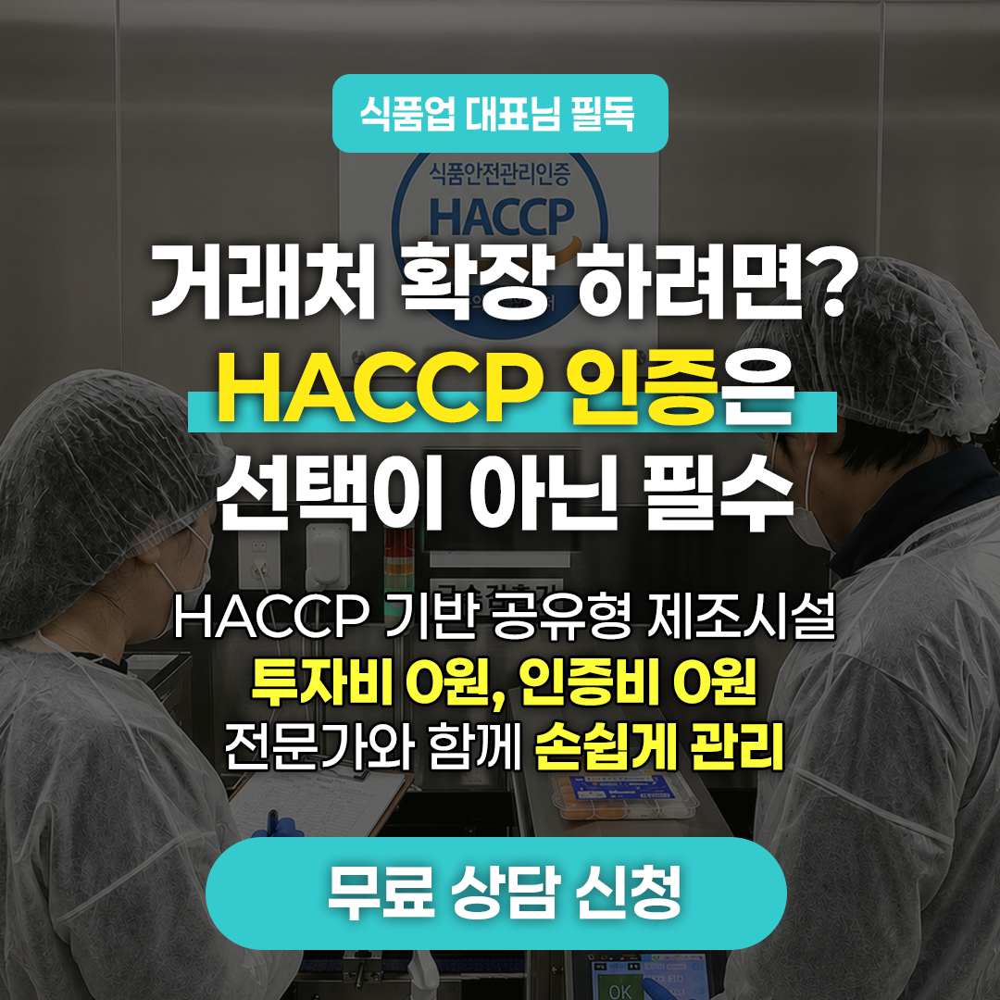

POST HACCP
입점 즉시 HACCP 인증이 가능한 시설 구축 완료.
사장님은 제조와 영업에 집중하고, 복잡한 준비 흐름은 상담에서 먼저 정리해드립니다.
내 품목이 지금 바로 제조 가능한지 먼저 확인해보세요
포스트공공해썹은 HACCP 기반 공유형 제조시설과 운영 지원 체계를 바탕으로 상담 한 번으로 내 품목의 제조 가능 여부, 맞는 지점, 지금 필요한 준비 순서까지 빠르게 정리해드리는 입점 상담 플랫폼입니다.
상담 한 번으로 먼저 정리되는 내용
- 가능 품목 지금 제조 가능한 품목인지 먼저 확인
- 추천 지점 광교점, 구리점, 동탄점 중 맞는 곳 안내
- 준비 순서 영업등록, 시설, HACCP 검토 우선순위 정리
- 상담 방식 전화 상담 또는 무료 시설투어로 연결
대표 상담 전화
010-2846-0544
전화 한 통이면 가능한 품목, 추천 지점, 준비 일정까지 바로 안내해드립니다.


[광교점] 광교 더 퍼스트 지식산업센터 3층 소재
경기도 수원시 영통구 매영로 159번길 19, 3층 302~306호 (원천동)
공간
HACCP 기준을 고려한 제조 인프라 검토
준비
지금 필요한 준비 항목만 먼저 정리
판단
소규모 여부와 준비 방향 빠르게 구분
시작
시설투어와 다음 단계까지 한 번에 안내
WHY IT FEELS HARD
왜 HACCP 준비는 늘 어렵게 느껴질까요?
대부분의 업체는 심사 자체보다도, 언제 필요한지와 무엇부터 준비해야 하는지가 불분명해서 더 큰 부담을 느낍니다.
지금 꼭 필요한지 판단이 어렵습니다
납품처, 유통 계획, 품목 특성에 따라 준비 시점이 달라지는데 이 기준부터 헷갈리는 경우가 많습니다.
준비 순서가 보이지 않습니다
영업등록, 공간 검토, 서류 준비, 현장 기준 정리 중 무엇을 먼저 해야 하는지 몰라 시간이 길어집니다.
대표가 혼자 다 떠안게 됩니다
식품 제조 초기에는 대표가 제품, 영업, 생산을 함께 챙겨야 해서 HACCP 준비까지 붙으면 더 막막해집니다.
HACCP MESSAGE
거래처 확대를 앞두고 있다면 지금 필요한 HACCP 준비부터 가볍게 확인해보세요
아직 모든 준비가 끝난 상태가 아니어도 괜찮습니다. 내 품목 기준으로 어떤 시설이 맞는지, 인증 검토가 지금 필요한지부터 빠르게 정리해드립니다.

CURRENT BRANCHES
지점 안내
OPERATING MODEL
포스트공공해썹은 막연한 준비를 실제 실행 단계로 바꿉니다
공간 안내만 하는 사이트가 아니라, 품목 기준 가능 여부와 준비 우선순위, 필요한 시설투어와 HACCP 검토 시점까지 한 번에 정리해드리는 구조에 가깝습니다.
품목 기준으로 먼저 봅니다
같은 식품 제조라도 소스, 반찬, 디저트, 간편식은 필요한 공간과 준비 방식이 다르기 때문에 품목부터 확인합니다.
준비 순서를 먼저 잡아드립니다
영업등록, 공간 검토, 기본 서류, 현장 기준 정리 중 지금 단계에서 필요한 항목만 먼저 추려드립니다.
소규모부터 일반 HACCP까지 방향을 나눕니다
업종과 규모에 따라 바로 일반 HACCP을 준비할지, 소규모 기준부터 검토할지 상담 단계에서 방향을 잡습니다.
대표가 신경 쓸 범위를 줄입니다
혼자 모든 절차를 이해하려 하기보다, 지금 필요한 결정만 빠르게 내릴 수 있도록 상담 구조를 단순하게 정리합니다.
BRANCH FACILITY
지점별 시설 안내
운영 지점별 시설 구성을 확인해보세요. 관심 있는 지점을 선택하면 주요 공간과 설비를 먼저 살펴볼 수 있습니다.

위생전실

생산실 복도

습식 전처리실

생산실 내부 (7.8평)

냉동 냉장 창고

탈의실

출입구

주출입구

주출입구

냉동창고

냉동창고 내부

생산실 복도

생산실

냉동/냉장 창고

탈의실

위생전실

생산실 복도

생산실 복도

생산실 복도
WHAT WE DO
상담에서 먼저 확인하는 핵심 내용
1차 확인
- 내 품목이 어느 지점에 더 적합한지
- 지금 HACCP 검토가 필요한 단계인지
- 시설투어가 필요한지 여부
- 영업등록 등 선행 확인 항목이 있는지
준비 흐름
- 공간과 공정 기준 1차 점검
- 기본 준비서류와 현장 항목 정리
- 인증 준비 단계별 진행 방향 안내
- 필요 시 전문 파트 협업 연계
핵심은 복잡한 설명을 길게 늘어놓기보다, 지금 바로 필요한 준비와 나중에 해도 되는 준비를 구분해드리는 것입니다.
WHO IT FITS
이런 경우라면 특히 상담 효율이 높습니다
막연하게 인증부터 묻는 것보다, 현재 사업 단계와 유통 계획을 함께 보는 경우 훨씬 빠르게 방향을 정할 수 있습니다.
식품 제조 스타트업
제조는 처음인데 납품과 유통 확장을 생각하고 있어 HACCP 방향을 같이 잡아야 하는 팀
소규모 브랜드
자체 공장 구축 전에 제조 가능성과 시장 테스트를 먼저 해보고 싶은 브랜드
기존 제조업체
거래처 요구나 유통 채널 확장 때문에 HACCP 검토가 필요한데 내부 전담 인력이 부족한 업체
준비 방향이 헷갈리는 경우
영업등록, 시설 기준, 인증 준비 중 무엇부터 해야 할지 몰라 일정이 자꾸 밀리는 경우
PROCESS
HACCP 준비는 보통 이런 순서로 정리됩니다
-
품목과 유통 계획 확인
무엇을 만들고 어디에 납품할지에 따라 HACCP 검토 시점이 달라집니다.
-
선행 요건 점검
영업등록, 공간 기준, 공정 적합성처럼 먼저 확인해야 할 항목을 점검합니다.
-
지점 및 공간 검토
광교점, 구리점, 동탄점 중 어느 지점이 더 맞는지와 시설투어 필요 여부를 정합니다.
-
기본 서류와 현장 기준 정리
필요한 준비자료와 현장 기준을 단계별로 정리해 실제 준비 범위를 줄입니다.
-
본격 인증 준비 진행
필요한 경우 전문 파트와 함께 심사 대응까지 이어질 수 있도록 준비 방향을 연결합니다.
FAQ
상담 전 자주 묻는 질문
어떤 업체가 입점할 수 있나요?
품목과 생산 공정에 따라 적합성이 달라집니다. 상담을 통해 관심 지점 기준의 가능성을 먼저 확인합니다.
HACCP 인증을 꼭 바로 받아야 하나요?
사업 단계와 납품 계획에 따라 다릅니다. 모든 업체가 바로 심사 준비부터 들어가는 것은 아니며, 현재 단계에서 필요한 범위를 먼저 구분하는 것이 중요합니다.
소규모 HACCP과 일반 HACCP은 어떻게 다른가요?
업종과 제조 규모에 따라 적용 방식이 달라질 수 있습니다. 상담 단계에서 어느 방향이 맞는지 먼저 구분한 뒤 준비 범위를 안내해드립니다.
영업등록이나 선행 절차도 먼저 봐야 하나요?
네. 실제로는 HACCP 준비 전에 영업등록이나 시설 기준처럼 먼저 확인해야 할 항목이 있습니다. 이 순서가 맞아야 전체 일정이 덜 꼬입니다.
상담 후 바로 입점이 가능한가요?
가능 여부는 업종, 일정, 현재 공간 상황에 따라 달라질 수 있습니다. 다만 상담을 통해 어떤 지점이 유력한지와 다음 단계는 빠르게 정리할 수 있습니다.
CONTACT
무료 상담 & 무료 시설투어
연락처와 품목만 남겨주셔도 충분합니다. 지금 HACCP 검토가 필요한 단계인지, 어느 지점을 먼저 보면 좋을지부터 정리해드립니다.
막막한 상태여도 먼저 문의하셔도 됩니다
준비가 다 된 상태가 아니어도 괜찮습니다. 현재 사업 단계와 품목 기준으로 무엇부터 보면 되는지 순서부터 안내해드립니다.